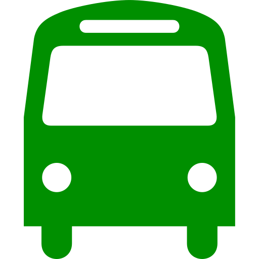
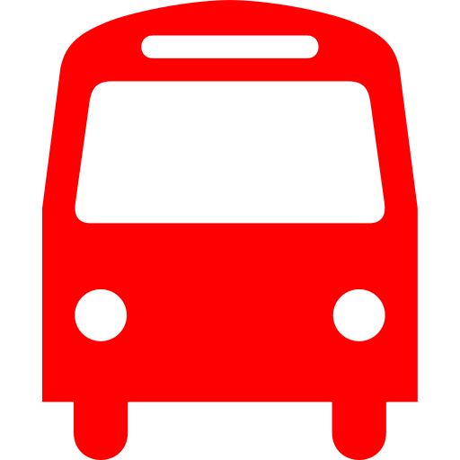

Você está na
LSTRANSIT!
Acompanhe o transporte público
em tempo real.
Linhas operantes e não operantes:
- 001 - Downtown/Market
Verona Mall, Market  - 030 - Downtown/Idlewood
Star Street, Temple - 004 - Idlewood/Temple
Fora de operação - 005 - Airport/Las Colinas
Fora de operação - 006 - Downtown/Temple
Fora de operação - 007 - Airport/Glen Park
Fora de operação